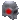

260111 - Urwen Bill Mogan Maseeri - campo da guerra Necromunda
21:13 Urwen [Piazzale - presidio ] sotto a quella notte tanto fredda quanto pungente il Flagello se ne sta lì al piazzale del Presidio, veste tutta di nero, dai pantaloni rigorosamente attillati, ad una camicia sbottonata di tre bottoni da sotto il collo, per nulla infastidita e ne toccata dal freddo della notte, in semi congedo, di chi vuole aver sotto controllo la circostanza e momento. Fauci al fianco sinistro, un pugnale all’interno dello stivale destro, la bionda chioma le carezza buona parte della schiena, a risaltarle il viso di carnagione chiara e dal piccolo taglio che taglia l’occhio destro, ormai in via di guarigione, di chi s’è fatta il trattamento curativo alla lettera. Gl’occhi neri come la pece migrano dapprima sul piazzale ed infine sui camminamenti, orecchie a punta allertate.
21:17 Mogan
Mogan
Mogan 
[Esterno cancelli] VI SBUDELLO LE BUDELLA MALIDETTI! [ Agita il pugno destro a mezz'aria, sfidando il cielo. La mano sinistra stà scavando tra le natiche mentre avanza a passi sbilenchi ed incerti. Indossa i soliti abiti scuri, sgualciti e fetenti con la scimitarra ben assicurata al fianco sinistro. I rasta ondeggiano liberi lungo il suo corpo smunto.]21:19 Mogan [Esterno cancelli] Si trova a una decina di metri dalla cancellata. Per chi lo osserva dai camminamenti, la sua andatura sconnessa e i movimenti irregolari lo fanno sembrare un ubriaco tarantolato, in bilico tra lo sbandare e il crollare a terra.
21:20 Vahn
Vahn  [esterno cancelli] [il cantore si stringe in un mantello pesante color della notte, nell'aria brumosa e cupa, quasi come fosse un pezzo di nuvola troppo pesante per camminare nel cielo. Il suo volto giovane e scoperto è rivolto in parte alla strada, in parte al suo compagno di viaggio: Bill Cragson.]…senti ma…[esita, soppesandolo cautamente con il suo sguardo liquido mentre camminano verso la nera città]…volevo chiedertelo da quando siamo tornati dalle isole capovolte...[sta di nuovo pescando parole nel lago invisibile dei non detti che sembra sempre circondarlo. Alla fine sorride e decide per una via diretta]…sei mai stato sposato? [distoglie lo sguardo, prudentemente, buttando la domanda lì come se niente fosse. Si scosta un ciuffo chiaro di capelli dal quel volto innocente, per poi assottigliare lo sguardo verso Mogan e il suo imprecare, avanti a loro di una decina di metri. Rallenta il passo con un sorriso tagliente]…come fa a essere sempre così ubriaco e veloce? [aggiunge questa seconda domanda verso Bill, più sommessamente, con una sincera curiosità nel tono]
[esterno cancelli] [il cantore si stringe in un mantello pesante color della notte, nell'aria brumosa e cupa, quasi come fosse un pezzo di nuvola troppo pesante per camminare nel cielo. Il suo volto giovane e scoperto è rivolto in parte alla strada, in parte al suo compagno di viaggio: Bill Cragson.]…senti ma…[esita, soppesandolo cautamente con il suo sguardo liquido mentre camminano verso la nera città]…volevo chiedertelo da quando siamo tornati dalle isole capovolte...[sta di nuovo pescando parole nel lago invisibile dei non detti che sembra sempre circondarlo. Alla fine sorride e decide per una via diretta]…sei mai stato sposato? [distoglie lo sguardo, prudentemente, buttando la domanda lì come se niente fosse. Si scosta un ciuffo chiaro di capelli dal quel volto innocente, per poi assottigliare lo sguardo verso Mogan e il suo imprecare, avanti a loro di una decina di metri. Rallenta il passo con un sorriso tagliente]…come fa a essere sempre così ubriaco e veloce? [aggiunge questa seconda domanda verso Bill, più sommessamente, con una sincera curiosità nel tono]
Vahn [esterno cancelli] [il cantore si stringe in un mantello pesante color della notte, nell'aria brumosa e cupa, quasi come fosse un pezzo di nuvola troppo pesante per camminare nel cielo. Il suo volto giovane e scoperto è rivolto in parte alla strada, in parte al suo compagno di viaggio: Bill Cragson.]…senti ma…[esita, soppesandolo cautamente con il suo sguardo liquido mentre camminano verso la nera città]…volevo chiedertelo da quando siamo tornati dalle isole capovolte...[sta di nuovo pescando parole nel lago invisibile dei non detti che sembra sempre circondarlo. Alla fine sorride e decide per una via diretta]…sei mai stato sposato? [distoglie lo sguardo, prudentemente, buttando la domanda lì come se niente fosse. Si scosta un ciuffo chiaro di capelli dal quel volto innocente, per poi assottigliare lo sguardo verso Mogan e il suo imprecare, avanti a loro di una decina di metri. Rallenta il passo con un sorriso tagliente]…come fa a essere sempre così ubriaco e veloce? [aggiunge questa seconda domanda verso Bill, più sommessamente, con una sincera curiosità nel tono]21:21 Maseeri [piazzale – presidio] [passeggia nel piazzale con aria svogliata, un paio di calzoni scuri e un mantello bordato di pelliccia, nero.. un cappuccio largo appoggiato sul capo che lascia comunque libero il viso… guarda le mura e il presidio proprio a un passo, sta per sbuffare quando ode un grido, no! un urlo, no! Una minaccia i qualcosa del genere, accenna un sorrisetto e sembra fiutare l’aria, come se si aspettasse davvero un qualche particolare olezzo] brezza dal mar… [canticchia allungando il passo ora più vivace]
Maseeri [piazzale – presidio] [passeggia nel piazzale con aria svogliata, un paio di calzoni scuri e un mantello bordato di pelliccia, nero.. un cappuccio largo appoggiato sul capo che lascia comunque libero il viso… guarda le mura e il presidio proprio a un passo, sta per sbuffare quando ode un grido, no! un urlo, no! Una minaccia i qualcosa del genere, accenna un sorrisetto e sembra fiutare l’aria, come se si aspettasse davvero un qualche particolare olezzo] brezza dal mar… [canticchia allungando il passo ora più vivace]
Maseeri [piazzale – presidio] [passeggia nel piazzale con aria svogliata, un paio di calzoni scuri e un mantello bordato di pelliccia, nero.. un cappuccio largo appoggiato sul capo che lascia comunque libero il viso… guarda le mura e il presidio proprio a un passo, sta per sbuffare quando ode un grido, no! un urlo, no! Una minaccia i qualcosa del genere, accenna un sorrisetto e sembra fiutare l’aria, come se si aspettasse davvero un qualche particolare olezzo] brezza dal mar… [canticchia allungando il passo ora più vivace]21:31 Bill
Bill  [esterno cancelli] Il vestiario parla prima di lui. Un lungo cappotto scuro, dal taglio severo, cade pesante sulle spalle, segnato dall’usura del sale e del tempo ma mantenuto con una cura ostinata. Il tessuto è spesso, quasi rigido, pensato più per resistere che per ornare; sulle spalle e lungo il petto corre una bordatura nera più profonda del resto, opaca come pece. Lì, ricamato con filo annerito che cattura la luce solo quando l’angolazione lo concede, si distingue il vessillo del Kraken Nero: tentacoli serrati attorno a un vuoto centrale. Sotto il cappotto, una giacca scura, chiusa alta sul collo, stringe il busto e costringe la postura a una fierezza quasi militare. Ma è dal viso in su che l’uomo si impone davvero. Il volto è scavato, ossuto, segnato da rughe che non appartengono all’età quanto alle decisioni prese. Inspira piano, come se stesse pescando il ricordo in fondo di sè. Stavolta guarda Vahn mentre parla, senza arrotondare nulla. «No. Non sono mai stato sposato.» Fa una pausa breve, pesata. «Ma ci sono andato vicino nel modo peggiore possibile.» Inclina appena il capo, lo sguardo perso oltre i cancelli, oltre la città. Un soffio di risata. «Le promisi una cosa sola: che non l’avrei resa vedova. E capii subito che quella promessa era già una fuga.» Si raddrizza leggermente. «Così non ci fu anello, né giuramento. Solo la certezza che sposarmi avrebbe voluto dire tradire qualcuno. O lei, o me stesso.» Poi lo guarda di nuovo. «Un pirata non si sposa, Vahn. Al massimo attracca ad ogni porto.» Un mezzo ghigno alla volta di Mogan. «Non è veloce perché è ubriaco. È ubriaco perché il firmamento non riesce a stargli dietro. L’alcol è solo il suo modo di rallentarlo.» Gli occhi gli scivolano per un istante sul tricorno di Thamior, e Bill ne imita il gesto con due dita, sistemandosi il proprio sulla capoccia. «E tu…» mormora. «Tu ne sai qualcosa.»
[esterno cancelli] Il vestiario parla prima di lui. Un lungo cappotto scuro, dal taglio severo, cade pesante sulle spalle, segnato dall’usura del sale e del tempo ma mantenuto con una cura ostinata. Il tessuto è spesso, quasi rigido, pensato più per resistere che per ornare; sulle spalle e lungo il petto corre una bordatura nera più profonda del resto, opaca come pece. Lì, ricamato con filo annerito che cattura la luce solo quando l’angolazione lo concede, si distingue il vessillo del Kraken Nero: tentacoli serrati attorno a un vuoto centrale. Sotto il cappotto, una giacca scura, chiusa alta sul collo, stringe il busto e costringe la postura a una fierezza quasi militare. Ma è dal viso in su che l’uomo si impone davvero. Il volto è scavato, ossuto, segnato da rughe che non appartengono all’età quanto alle decisioni prese. Inspira piano, come se stesse pescando il ricordo in fondo di sè. Stavolta guarda Vahn mentre parla, senza arrotondare nulla. «No. Non sono mai stato sposato.» Fa una pausa breve, pesata. «Ma ci sono andato vicino nel modo peggiore possibile.» Inclina appena il capo, lo sguardo perso oltre i cancelli, oltre la città. Un soffio di risata. «Le promisi una cosa sola: che non l’avrei resa vedova. E capii subito che quella promessa era già una fuga.» Si raddrizza leggermente. «Così non ci fu anello, né giuramento. Solo la certezza che sposarmi avrebbe voluto dire tradire qualcuno. O lei, o me stesso.» Poi lo guarda di nuovo. «Un pirata non si sposa, Vahn. Al massimo attracca ad ogni porto.» Un mezzo ghigno alla volta di Mogan. «Non è veloce perché è ubriaco. È ubriaco perché il firmamento non riesce a stargli dietro. L’alcol è solo il suo modo di rallentarlo.» Gli occhi gli scivolano per un istante sul tricorno di Thamior, e Bill ne imita il gesto con due dita, sistemandosi il proprio sulla capoccia. «E tu…» mormora. «Tu ne sai qualcosa.»
Bill [esterno cancelli] Il vestiario parla prima di lui. Un lungo cappotto scuro, dal taglio severo, cade pesante sulle spalle, segnato dall’usura del sale e del tempo ma mantenuto con una cura ostinata. Il tessuto è spesso, quasi rigido, pensato più per resistere che per ornare; sulle spalle e lungo il petto corre una bordatura nera più profonda del resto, opaca come pece. Lì, ricamato con filo annerito che cattura la luce solo quando l’angolazione lo concede, si distingue il vessillo del Kraken Nero: tentacoli serrati attorno a un vuoto centrale. Sotto il cappotto, una giacca scura, chiusa alta sul collo, stringe il busto e costringe la postura a una fierezza quasi militare. Ma è dal viso in su che l’uomo si impone davvero. Il volto è scavato, ossuto, segnato da rughe che non appartengono all’età quanto alle decisioni prese. Inspira piano, come se stesse pescando il ricordo in fondo di sè. Stavolta guarda Vahn mentre parla, senza arrotondare nulla. «No. Non sono mai stato sposato.» Fa una pausa breve, pesata. «Ma ci sono andato vicino nel modo peggiore possibile.» Inclina appena il capo, lo sguardo perso oltre i cancelli, oltre la città. Un soffio di risata. «Le promisi una cosa sola: che non l’avrei resa vedova. E capii subito che quella promessa era già una fuga.» Si raddrizza leggermente. «Così non ci fu anello, né giuramento. Solo la certezza che sposarmi avrebbe voluto dire tradire qualcuno. O lei, o me stesso.» Poi lo guarda di nuovo. «Un pirata non si sposa, Vahn. Al massimo attracca ad ogni porto.» Un mezzo ghigno alla volta di Mogan. «Non è veloce perché è ubriaco. È ubriaco perché il firmamento non riesce a stargli dietro. L’alcol è solo il suo modo di rallentarlo.» Gli occhi gli scivolano per un istante sul tricorno di Thamior, e Bill ne imita il gesto con due dita, sistemandosi il proprio sulla capoccia. «E tu…» mormora. «Tu ne sai qualcosa.»21:35Urwen  [Piazzale - presidio ] [guarda un paio di draghi lì in prossimità dei cancelli, probabilmente assorti nei loro pensieri, fa un passo massimo due tre arrivando vicina a quei due] Ehi voi due! Andate sui camminamenti! [ringhia sottovoce assottigliando gli occhi come due lame gelide, tanto glaciali quanto pungenti, tempra ed autorità albergano negli atteggiamenti ed animo della paladina, il tono di voce imperativo, risaltato dall’accento elfico. I due draghi si “risvegliano” intimoriti lì di fronte alla paladina, che nemmeno sanno come risponderle, e di tutto silenzio s’avviano verso le scale frettolosamente, ubbidendo agli ordini del Flagello] *Mannaggia a voi!* [parla a denti stretti serrando le mascelle ed in lingua elfica, effettivamente filino nervosa, fredda, nulla il silenzio il ticchettio dei passi, le voci fuori dai cancelli, tengono Urwen sveglia. Gli occhi neri migrano oltre le grate dei cancelli della Nera] Chi va la? [scruta gli avventori, facce conosciute e non] Draghi occhi aperti! [tuona, placida]
[Piazzale - presidio ] [guarda un paio di draghi lì in prossimità dei cancelli, probabilmente assorti nei loro pensieri, fa un passo massimo due tre arrivando vicina a quei due] Ehi voi due! Andate sui camminamenti! [ringhia sottovoce assottigliando gli occhi come due lame gelide, tanto glaciali quanto pungenti, tempra ed autorità albergano negli atteggiamenti ed animo della paladina, il tono di voce imperativo, risaltato dall’accento elfico. I due draghi si “risvegliano” intimoriti lì di fronte alla paladina, che nemmeno sanno come risponderle, e di tutto silenzio s’avviano verso le scale frettolosamente, ubbidendo agli ordini del Flagello] *Mannaggia a voi!* [parla a denti stretti serrando le mascelle ed in lingua elfica, effettivamente filino nervosa, fredda, nulla il silenzio il ticchettio dei passi, le voci fuori dai cancelli, tengono Urwen sveglia. Gli occhi neri migrano oltre le grate dei cancelli della Nera] Chi va la? [scruta gli avventori, facce conosciute e non] Draghi occhi aperti! [tuona, placida]
Urwen [Piazzale - presidio ] [guarda un paio di draghi lì in prossimità dei cancelli, probabilmente assorti nei loro pensieri, fa un passo massimo due tre arrivando vicina a quei due] Ehi voi due! Andate sui camminamenti! [ringhia sottovoce assottigliando gli occhi come due lame gelide, tanto glaciali quanto pungenti, tempra ed autorità albergano negli atteggiamenti ed animo della paladina, il tono di voce imperativo, risaltato dall’accento elfico. I due draghi si “risvegliano” intimoriti lì di fronte alla paladina, che nemmeno sanno come risponderle, e di tutto silenzio s’avviano verso le scale frettolosamente, ubbidendo agli ordini del Flagello] *Mannaggia a voi!* [parla a denti stretti serrando le mascelle ed in lingua elfica, effettivamente filino nervosa, fredda, nulla il silenzio il ticchettio dei passi, le voci fuori dai cancelli, tengono Urwen sveglia. Gli occhi neri migrano oltre le grate dei cancelli della Nera] Chi va la? [scruta gli avventori, facce conosciute e non] Draghi occhi aperti! [tuona, placida]21:38Mogan [Esterno cancelli] SON'IO! IL CAMMELLO MARINO! SPALANCATEMI IL PASSO, CA NON HO TEMPO D'APPEREPEPPEPERDERE! MANNAIA AL FRUSTALUPI! [ Porta le mani a mo di coppetta all'altezza delle labbra mentre ulula in direzione dei camminamenti.] uhm..[ tenta di arrestare l’incedere, serra le gambe con decisione più sperata che reale, ma l’equilibrio lo tradisce: scarta di lato con due passi sbilenchi, come se il terreno gli scivolasse sotto i piedi. Le braccia si sollevano di scatto, aperte, in cerca disperata di stabilità.] FERMATEVI, PRUTTI RATTI DI SENTINA! SCIABORDA TUTTO! ARGH! [ ringhia, più ai propri demoni che a chiunque altro. Nel farlo, intercetta con lo sguardo Vahn e Bill che sopraggiungono, gli occhi accesi di rosso e sgranati, l’espressione di chi combatte una battaglia tutta sua tra l’orgoglio e la perdita totale di controllo.] Avete qualcosa da bere? [ Alterna lo sguardo dal Capitano al Bardo, sorridendo a denti stretti. Ebete.]
Mogan [Esterno cancelli] SON'IO! IL CAMMELLO MARINO! SPALANCATEMI IL PASSO, CA NON HO TEMPO D'APPEREPEPPEPERDERE! MANNAIA AL FRUSTALUPI! [ Porta le mani a mo di coppetta all'altezza delle labbra mentre ulula in direzione dei camminamenti.] uhm..[ tenta di arrestare l’incedere, serra le gambe con decisione più sperata che reale, ma l’equilibrio lo tradisce: scarta di lato con due passi sbilenchi, come se il terreno gli scivolasse sotto i piedi. Le braccia si sollevano di scatto, aperte, in cerca disperata di stabilità.] FERMATEVI, PRUTTI RATTI DI SENTINA! SCIABORDA TUTTO! ARGH! [ ringhia, più ai propri demoni che a chiunque altro. Nel farlo, intercetta con lo sguardo Vahn e Bill che sopraggiungono, gli occhi accesi di rosso e sgranati, l’espressione di chi combatte una battaglia tutta sua tra l’orgoglio e la perdita totale di controllo.] Avete qualcosa da bere? [ Alterna lo sguardo dal Capitano al Bardo, sorridendo a denti stretti. Ebete.]21:42Vahn [esterno cancelli] [mentre ascolta il capitano il sorriso già si tinge di quel malinconico riconoscersi a vicenda.]…in questo i pirati sono simili ai poeti. [confida, sfiorandosi il tricorno di Thamior che sembra pesargli in testa quanto un punto d’inchiostro mal riuscito alla fine della frase appena pronunciata. Il passo rallenta, man mano che i due si avvicinano a Mogan e ai cancelli. Sono praticamente lì.]…più veloce del firmamento, dici? [ripete le parole di Bill, fermandosi davanti a Mogan e osservandolo come si osserverebbe un dipinto in movimento.]…cammello…hai prosciugato le scorte di Isla Blanca che m’erano rimaste. Al massimo posso toccarti. [laconico, offre quello che ha con un brillare di stelle negli occhi. Poi alza gli occhi ai camminamenti, prendendo un tono più neutro e serio]…sono Vahn, cantore delle Stelle Erranti. [si presenta, esile e chiaro come un filo d’erba sconosciuto al sole.]
Vahn [esterno cancelli] [mentre ascolta il capitano il sorriso già si tinge di quel malinconico riconoscersi a vicenda.]…in questo i pirati sono simili ai poeti. [confida, sfiorandosi il tricorno di Thamior che sembra pesargli in testa quanto un punto d’inchiostro mal riuscito alla fine della frase appena pronunciata. Il passo rallenta, man mano che i due si avvicinano a Mogan e ai cancelli. Sono praticamente lì.]…più veloce del firmamento, dici? [ripete le parole di Bill, fermandosi davanti a Mogan e osservandolo come si osserverebbe un dipinto in movimento.]…cammello…hai prosciugato le scorte di Isla Blanca che m’erano rimaste. Al massimo posso toccarti. [laconico, offre quello che ha con un brillare di stelle negli occhi. Poi alza gli occhi ai camminamenti, prendendo un tono più neutro e serio]…sono Vahn, cantore delle Stelle Erranti. [si presenta, esile e chiaro come un filo d’erba sconosciuto al sole.]21:45Maseeri [piazzale – presidio] [giunge ai cancelli, discreta, molleggiando sulle gambe allegra, più si avvicina più sente, più sente più le vien da ridere] sì sì è proprio brezza [borbotta scivolando contro un muro e sbirciando il cancello vero e proprio, si avvede di alcune guardie di spalle, di alcune figure in entrata] uno… due e tre [mormora sfregandosi le mani fra loro, sembrerebbe per il freddo] forse non devo correggere lo sbarlume e fare prove a caso sulla servitù dell’imperatore per vincere la noia [sospira speranzosa]
Maseeri [piazzale – presidio] [giunge ai cancelli, discreta, molleggiando sulle gambe allegra, più si avvicina più sente, più sente più le vien da ridere] sì sì è proprio brezza [borbotta scivolando contro un muro e sbirciando il cancello vero e proprio, si avvede di alcune guardie di spalle, di alcune figure in entrata] uno… due e tre [mormora sfregandosi le mani fra loro, sembrerebbe per il freddo] forse non devo correggere lo sbarlume e fare prove a caso sulla servitù dell’imperatore per vincere la noia [sospira speranzosa]21:49Bill [Esterno cancelli] «Camelè… prima d’entrarci… piscia. L’ultima volta stavi per farti tagliare il gioiello dalle guardie della rocca.» Poi si volta verso Vahn, lo sguardo fisso, tagliente. «E tu… quanti amori hai lasciato lungo la via?» Un’occhiata alle mura, ormai imponenti contro la figura degli avventori, e Bill stringe appena le mani, come a tastare il peso dell’aria che li separa dalla città.
Bill [Esterno cancelli] «Camelè… prima d’entrarci… piscia. L’ultima volta stavi per farti tagliare il gioiello dalle guardie della rocca.» Poi si volta verso Vahn, lo sguardo fisso, tagliente. «E tu… quanti amori hai lasciato lungo la via?» Un’occhiata alle mura, ormai imponenti contro la figura degli avventori, e Bill stringe appena le mani, come a tastare il peso dell’aria che li separa dalla città.21:52Urwen [Piazzale - presidio ] [sposta gli occhi oltre le grate in quel buio che regna sovrano nel cuore della notte, l’elfa sfrutta le proprie capacità razziali, ma è la voce mista a urlo e ringhio di Mogan che subito riconosce e sobbalza con lo sguardo, muovendo un balzo indietro, un fremito che le percorre lungo la schiena è inevitabile, sente poi Vahn, coinvolgendo l’elfa in un lungo silenzio. Maseeri che si avvicina al piazzale, apre e chiude gli occhi di chi cerca di metabolizzare il quadro della situazione, nella propria mente, che viene completato poi dal Navarca, ed è lì che cerca di trattenere tutte le proprie emozioni, dando a vedere all’apparenza uno sguardo impassibile] DRAGHI LASSU’! [alza occhi e sguardo lì sui camminamenti] Aprite i cancelli! [tuona, ordina, di chi non vuol ammettere repliche, un ordine tagliente, glaciale freddo, marziale. E di conseguenza i Draghi sui camminamenti si mettono all’opera, lavorando e destreggiandosi con le leve e con le catene, che man a mano vengono tirate s’ode un clangore assordante delle grate dei cancelli, che lentamente vengono aperti]
Urwen [Piazzale - presidio ] [sposta gli occhi oltre le grate in quel buio che regna sovrano nel cuore della notte, l’elfa sfrutta le proprie capacità razziali, ma è la voce mista a urlo e ringhio di Mogan che subito riconosce e sobbalza con lo sguardo, muovendo un balzo indietro, un fremito che le percorre lungo la schiena è inevitabile, sente poi Vahn, coinvolgendo l’elfa in un lungo silenzio. Maseeri che si avvicina al piazzale, apre e chiude gli occhi di chi cerca di metabolizzare il quadro della situazione, nella propria mente, che viene completato poi dal Navarca, ed è lì che cerca di trattenere tutte le proprie emozioni, dando a vedere all’apparenza uno sguardo impassibile] DRAGHI LASSU’! [alza occhi e sguardo lì sui camminamenti] Aprite i cancelli! [tuona, ordina, di chi non vuol ammettere repliche, un ordine tagliente, glaciale freddo, marziale. E di conseguenza i Draghi sui camminamenti si mettono all’opera, lavorando e destreggiandosi con le leve e con le catene, che man a mano vengono tirate s’ode un clangore assordante delle grate dei cancelli, che lentamente vengono aperti]21:55Mogan [Esterno cancelli] AHAHAH [ Fa eco alle parole di Vahn con una risata grassa e fragorosa, mentre le mani vanno a cingergli la pancia che sobbalza a ogni gorgoglio, come una botte mezza vuota scossa dal mare. ] Non toccare il Cammello! [ Sbraita, ancora divertito.] codesta notte è fatta per sdarsi, godere della vita. Ho veduto troppe stranezze da sobrio, abbisogno di vederne altrettante da satollo! [ Poi lo sguardo scivola, storto e furbo, a cercare Bill. Il naso adunco e la barbetta arruffata non riescono a nascondere del tutto il ghigno divertito del Libeccio, che inclina appena il capo a mirare oltre le sbarre della cancellata prima di tornare sul Navarca.] la tengo pronta per riempire la sala del trono…[ Mormora, prima di lanciare un’occhiata alle spalle, sbirciando oltre con aria cospiratoria, come se stesse già immaginando il disastro imminente. Tra le labbra sfugge un luccichio dorato.]
Mogan [Esterno cancelli] AHAHAH [ Fa eco alle parole di Vahn con una risata grassa e fragorosa, mentre le mani vanno a cingergli la pancia che sobbalza a ogni gorgoglio, come una botte mezza vuota scossa dal mare. ] Non toccare il Cammello! [ Sbraita, ancora divertito.] codesta notte è fatta per sdarsi, godere della vita. Ho veduto troppe stranezze da sobrio, abbisogno di vederne altrettante da satollo! [ Poi lo sguardo scivola, storto e furbo, a cercare Bill. Il naso adunco e la barbetta arruffata non riescono a nascondere del tutto il ghigno divertito del Libeccio, che inclina appena il capo a mirare oltre le sbarre della cancellata prima di tornare sul Navarca.] la tengo pronta per riempire la sala del trono…[ Mormora, prima di lanciare un’occhiata alle spalle, sbirciando oltre con aria cospiratoria, come se stesse già immaginando il disastro imminente. Tra le labbra sfugge un luccichio dorato.]22:01Vahn [esterno cancelli] [la risposta del cantore all’ultima domanda di Bill quasi si perde nel clangore dell’aprirsi dei cancelli]…Tra ciò che è stato detto e non inteso, e ciò che è stato inteso ma non detto, si perde la maggior parte di quello che io ho chiamato amore, Bill. [nello sguardo breve che gli rivolge, quella sua dolce e triste speranza. Poi un guizzo d’ironia]…una via troppo lunga da ripercorrere senza bagnarsi le labbra di rum…[esita, ascoltando Mogan divertito, incitandolo annuendo più volte alle sue parole]… prima che gli occhi di lacrime…[aggiunge con un sorriso preoccupato da ciò che infine il cammello confida a Bill. Scosta lo sguardo e si fa un passo di lato, aspettando che i cancelli si aprano del tutto. Gli occhi guardano le mura assorti per un attimo. Non sembra ancora essersi accorto di chi v’è al di là]
Vahn [esterno cancelli] [la risposta del cantore all’ultima domanda di Bill quasi si perde nel clangore dell’aprirsi dei cancelli]…Tra ciò che è stato detto e non inteso, e ciò che è stato inteso ma non detto, si perde la maggior parte di quello che io ho chiamato amore, Bill. [nello sguardo breve che gli rivolge, quella sua dolce e triste speranza. Poi un guizzo d’ironia]…una via troppo lunga da ripercorrere senza bagnarsi le labbra di rum…[esita, ascoltando Mogan divertito, incitandolo annuendo più volte alle sue parole]… prima che gli occhi di lacrime…[aggiunge con un sorriso preoccupato da ciò che infine il cammello confida a Bill. Scosta lo sguardo e si fa un passo di lato, aspettando che i cancelli si aprano del tutto. Gli occhi guardano le mura assorti per un attimo. Non sembra ancora essersi accorto di chi v’è al di là]22:01Maseeri [piazzale – presidio] [si appoggia con una spalla a uno dei bastioni e osserva le operazioni di apertura dei cancelli, le voci che si mischiano, nota l’elfa, un sopracciglio le si alza e sembra raccogliere i pensieri e la concentrazione, come se stesse richiamando un qualche tipo di pensiero in particolare, canticchia come una filastrocca] …serpente che striscia… serpente che gira, serpente si alza, il cobra sospira…. [uno sguardo placido sulle spalle di Urwen, e più in là sui tre avventori] [MORSO DEL COBRA 1/2]
Maseeri [piazzale – presidio] [si appoggia con una spalla a uno dei bastioni e osserva le operazioni di apertura dei cancelli, le voci che si mischiano, nota l’elfa, un sopracciglio le si alza e sembra raccogliere i pensieri e la concentrazione, come se stesse richiamando un qualche tipo di pensiero in particolare, canticchia come una filastrocca] …serpente che striscia… serpente che gira, serpente si alza, il cobra sospira…. [uno sguardo placido sulle spalle di Urwen, e più in là sui tre avventori] [MORSO DEL COBRA 1/2]22:07Bill [esterno cancelli] Non commenterà le parole di Vahn, osservando le cancellate alzarsi. Si piega appena in avanti, la barba aguzza che sembra scorticare l’ombra del volto. La voce gli scivola tra i denti, bassa e roca: «Vahn… dimmi un poco… secondo te, il Cammello tiene poi tanto al suo… ornamento?» Un mezzo ghigno, occhi che scintillano. «E tu… se ti capitasse… faresti un arco di rabarbaro nella sala di comando di Keleldur, senza badar a nulla?» Si raddrizza. Lancia uno sguardo rapido a Mogan: «Quel diavolo di Libeccio…»
Bill [esterno cancelli] Non commenterà le parole di Vahn, osservando le cancellate alzarsi. Si piega appena in avanti, la barba aguzza che sembra scorticare l’ombra del volto. La voce gli scivola tra i denti, bassa e roca: «Vahn… dimmi un poco… secondo te, il Cammello tiene poi tanto al suo… ornamento?» Un mezzo ghigno, occhi che scintillano. «E tu… se ti capitasse… faresti un arco di rabarbaro nella sala di comando di Keleldur, senza badar a nulla?» Si raddrizza. Lancia uno sguardo rapido a Mogan: «Quel diavolo di Libeccio…»22:08Urwen [Piazzale - presidio ] [le due facce conosciute le ha notate, Vahn è quello nuovo per la paladina, aggrotta la fronte mista a serietà e curiosità causata in quel momento] Kaos Lex Messere, il mio nome è Urwen, Flagello dell’Armata dei Draghi…[l’elfa è una figura che non supera i centosettanta centimetri d’altezza, snella ma particolarmente sviluppata, formosa al punto giusto senza alcuna imperfezione, di chi si tiene ordinata e curata quando può e vuole, bionda chioma che le ricade sulle spalle e per buona parte della schiena. Ignara di quello che sta facendo Maseeri e presa dai pirati e da quel momento, non sembrerebbe accorgersi delle sue intenzioni. Dal proprio canto l’elfa cerca di mantenere un atteggiamento tra il composto e il discreto, trattenendo tutte le proprie emozioni, in presenza del Navarca, anzi proverebbe a cercare con gli occhi il Libeccio, Mogan]
Urwen [Piazzale - presidio ] [le due facce conosciute le ha notate, Vahn è quello nuovo per la paladina, aggrotta la fronte mista a serietà e curiosità causata in quel momento] Kaos Lex Messere, il mio nome è Urwen, Flagello dell’Armata dei Draghi…[l’elfa è una figura che non supera i centosettanta centimetri d’altezza, snella ma particolarmente sviluppata, formosa al punto giusto senza alcuna imperfezione, di chi si tiene ordinata e curata quando può e vuole, bionda chioma che le ricade sulle spalle e per buona parte della schiena. Ignara di quello che sta facendo Maseeri e presa dai pirati e da quel momento, non sembrerebbe accorgersi delle sue intenzioni. Dal proprio canto l’elfa cerca di mantenere un atteggiamento tra il composto e il discreto, trattenendo tutte le proprie emozioni, in presenza del Navarca, anzi proverebbe a cercare con gli occhi il Libeccio, Mogan]22:09Mogan [Esterno cancelli] Ivano mio! Vien quà! Abbraccia il Cammello di mare! [allarga le braccia, lunghe e nodose, indurite da anni di funi ruvide e mare grosso, aprendole con slancio goffo ma sincero, nel chiaro e pericoloso intento di accogliere tra esse il corpo gracile del Bardo.] Non dare spago al vecchio Navarca, troppo miele fa male alla pancia! [ Resta li, immobile, anche quando i cancelli sembrano aprirsi.]
Mogan [Esterno cancelli] Ivano mio! Vien quà! Abbraccia il Cammello di mare! [allarga le braccia, lunghe e nodose, indurite da anni di funi ruvide e mare grosso, aprendole con slancio goffo ma sincero, nel chiaro e pericoloso intento di accogliere tra esse il corpo gracile del Bardo.] Non dare spago al vecchio Navarca, troppo miele fa male alla pancia! [ Resta li, immobile, anche quando i cancelli sembrano aprirsi.]22:20Vahn [esterno cancelli] …Buonasera, Urwen…[ci pensa un secondo, osservandola senza ancora muoversi]…Urwen?…[ripete, cercando nella memoria]…avete per caso partecipato al torneo di Ghileas? [le domanda, dubbioso]…ehr…mi accompagno a codesti onorevoli signori per una visita all’Albina…dopo molti anni. [Le sorride sincero, con un cenno del capo rispettoso. Poi osserva Mogan mentre Bill parla]…hmm non so, io ho l’impressione che il cammello nasconda nella sua teca tanti ornamenti, uno diverso dall’altro, e che scelga quale adoperare a seconda del vento che tira. Forse solo con lui azzarderei un’altra sfida nei palazzi del potere…solo per vedere la faccia di Keleldur. [azzarda, proprio mentre il Libeccio gli spalanca le braccia davanti. L’elfo ridacchia, tra il tentato e l’intimorito. Alla fine, come quelle bestie malate attratte dal pericolo, lo abbraccia, storcendo il naso]…benamato Cammello, ma chi ci crederà? Non so davvero come si farà a raccontarla questa storia. [stringe brevemente e con affetto, ma già prudentemente farebbe per sgattaiolare via da quella presa nodosa]
Vahn [esterno cancelli] …Buonasera, Urwen…[ci pensa un secondo, osservandola senza ancora muoversi]…Urwen?…[ripete, cercando nella memoria]…avete per caso partecipato al torneo di Ghileas? [le domanda, dubbioso]…ehr…mi accompagno a codesti onorevoli signori per una visita all’Albina…dopo molti anni. [Le sorride sincero, con un cenno del capo rispettoso. Poi osserva Mogan mentre Bill parla]…hmm non so, io ho l’impressione che il cammello nasconda nella sua teca tanti ornamenti, uno diverso dall’altro, e che scelga quale adoperare a seconda del vento che tira. Forse solo con lui azzarderei un’altra sfida nei palazzi del potere…solo per vedere la faccia di Keleldur. [azzarda, proprio mentre il Libeccio gli spalanca le braccia davanti. L’elfo ridacchia, tra il tentato e l’intimorito. Alla fine, come quelle bestie malate attratte dal pericolo, lo abbraccia, storcendo il naso]…benamato Cammello, ma chi ci crederà? Non so davvero come si farà a raccontarla questa storia. [stringe brevemente e con affetto, ma già prudentemente farebbe per sgattaiolare via da quella presa nodosa]22:21Maseeri [piazzale – presidio] [osserva attenta, un sorrisetto placido in volto, continua a canticchiare, gli occhi sembrano assenti ma seguono le mosse di tutti, in particolar modo del Capitano, continua a canticchiare ma con voce chiara] ..il cobra non è… un serpente… ma un pensiero frequente…. [osserva Bill, osserva l’elfa e aggiunge] che diventa…. [sospende la canzone ma tiene lo sguardo fisso sulle spalle di Urwen, cominciando a muoversi con grazia verso l’elfa] ….indecente.. [aggiunge arrivandole a un paio di passi, volto ben visibile, osserva i tre aggiunge puntando gli occhi da qualche parte là fuori] quando vedo te… [un mezzo sorriso poi sembra scuotersi e a voce alta urla] EHI LO VOGLIO ANCHE IO UN ABBRACCIO!
Maseeri [piazzale – presidio] [osserva attenta, un sorrisetto placido in volto, continua a canticchiare, gli occhi sembrano assenti ma seguono le mosse di tutti, in particolar modo del Capitano, continua a canticchiare ma con voce chiara] ..il cobra non è… un serpente… ma un pensiero frequente…. [osserva Bill, osserva l’elfa e aggiunge] che diventa…. [sospende la canzone ma tiene lo sguardo fisso sulle spalle di Urwen, cominciando a muoversi con grazia verso l’elfa] ….indecente.. [aggiunge arrivandole a un paio di passi, volto ben visibile, osserva i tre aggiunge puntando gli occhi da qualche parte là fuori] quando vedo te… [un mezzo sorriso poi sembra scuotersi e a voce alta urla] EHI LO VOGLIO ANCHE IO UN ABBRACCIO!22:28Bill [esterno cancelli] inclina appena la testa, lo sguardo che scivola su Urwen senza fermarsi troppo. Un mezzo sorriso sotto la barba aguzza, ma negli occhi non traspare nulla. «Urwen…» mormora quasi per sé, voce roca e bassa, mentre il passo resta lento e misurato. «Non ti vedevo da un pezzo… eppure sembra ieri che il mare ci portava la stessa rotta.» Si volta di scatto verso Maseeri, ridacchiando appena, un suono secco come corda scricchiolante sotto il vento. «E tu… chi speri di abbracciare, eh?» Gli occhi di Bill scivolano rapidamente su Vahn e Mogan, osservando il primo mentre tenta di divincolarsi con la solita compostezza.
Bill [esterno cancelli] inclina appena la testa, lo sguardo che scivola su Urwen senza fermarsi troppo. Un mezzo sorriso sotto la barba aguzza, ma negli occhi non traspare nulla. «Urwen…» mormora quasi per sé, voce roca e bassa, mentre il passo resta lento e misurato. «Non ti vedevo da un pezzo… eppure sembra ieri che il mare ci portava la stessa rotta.» Si volta di scatto verso Maseeri, ridacchiando appena, un suono secco come corda scricchiolante sotto il vento. «E tu… chi speri di abbracciare, eh?» Gli occhi di Bill scivolano rapidamente su Vahn e Mogan, osservando il primo mentre tenta di divincolarsi con la solita compostezza.22:29Urwen [Piazzale - presidio ] [i draghi sui camminamenti ci mettono un poco a fare il loro lavoro, quello di tirare su le grate, che una volta tirate completamente su permetterebbero a Bill Mogan e Vahn di entrare dentro la Nera] Voi lassù! [rivolta ai draghi di ronda sui camminamenti] Continuate così, la prossima volta sorbirete la furia del Drago Nero, non so quanto vi convenga! [ringhia inferocita, sostenendo il tono di voce tanto marziale quanto freddo, di chi non vuole sentenze.] Richiudete i cancelli quando saranno entrati TUTTI! [conclude alla volta dei Draghi incalzando sull’ultima parola. Soltanto in quel momento s’avvede di Maseeri, esattamente quando la parirazza le si affianca, rispondendo di questo passo a Vahn che lo scruta dalla testa ai piedi e viceversa] Si sono io. Si ho partecipato ad alcuni eventi del Torneo che avevate organizzato…[stringe le spalle, all’urlo della parirazza l’elfa indietreggia, trattenendo ancora tutto quel sussulto di emozioni e lo fa con un mix di veemenza, forza, di chi fosse ormai abituata a quel piccolo scompiglio, specie anche quando Bill la richiama, o forse.] Da…Dal momento che siete ospiti anche del Drago Nero Sir Haskonyius, già ho fornito tutti i dettagli a vostra….Ehm…[guarda di nuovo Maseeri] Sorella?! [retorica, parrebbe cercare conferme dai due diretti interessati]
Urwen [Piazzale - presidio ] [i draghi sui camminamenti ci mettono un poco a fare il loro lavoro, quello di tirare su le grate, che una volta tirate completamente su permetterebbero a Bill Mogan e Vahn di entrare dentro la Nera] Voi lassù! [rivolta ai draghi di ronda sui camminamenti] Continuate così, la prossima volta sorbirete la furia del Drago Nero, non so quanto vi convenga! [ringhia inferocita, sostenendo il tono di voce tanto marziale quanto freddo, di chi non vuole sentenze.] Richiudete i cancelli quando saranno entrati TUTTI! [conclude alla volta dei Draghi incalzando sull’ultima parola. Soltanto in quel momento s’avvede di Maseeri, esattamente quando la parirazza le si affianca, rispondendo di questo passo a Vahn che lo scruta dalla testa ai piedi e viceversa] Si sono io. Si ho partecipato ad alcuni eventi del Torneo che avevate organizzato…[stringe le spalle, all’urlo della parirazza l’elfa indietreggia, trattenendo ancora tutto quel sussulto di emozioni e lo fa con un mix di veemenza, forza, di chi fosse ormai abituata a quel piccolo scompiglio, specie anche quando Bill la richiama, o forse.] Da…Dal momento che siete ospiti anche del Drago Nero Sir Haskonyius, già ho fornito tutti i dettagli a vostra….Ehm…[guarda di nuovo Maseeri] Sorella?! [retorica, parrebbe cercare conferme dai due diretti interessati]22:31Mogan [Esterno cancelli] [ Cinge il corpo di Vahn con le proprie braccia, stringendo quel tanto che basta da trasmettere al Bardo il suo calore ruvido e fraterno, ha lo stesso odore di un cane bagnato che ha bevuto almeno una bottiglia di rum scadente. Quando la presa lentamente si allenta e l’abbraccio si scioglie, la mano sinistra scivola con distrazione verso la tasca destra dell’elfo, tentando di agguantare ciò che vi riposa, mentre gli occhi restano fissi sul compare, innocenti solo in apparenza.] Ah! quel legnetto! Quello con la "VU". [ Annuisce un paio di volte mentre sbiascica saliva.] Quello è un pezzo del legno della Lamarien. Precisamente il seno di Rhyannor, la polena. La "VU" stà per : " Vorrei spalmarti le mie membra sul corpo tuo, Rhyanna bella. " [ In fine ruota la nuca, ingobbito e storto, osserva Maseeri, poi Urwen, poi di nuovo Maseeri.] Volete abbracciarmi? Venite venite! [ Tira fuori la lingua e la agita fuori dalle labbra, viscida serpe.]
Mogan [Esterno cancelli] [ Cinge il corpo di Vahn con le proprie braccia, stringendo quel tanto che basta da trasmettere al Bardo il suo calore ruvido e fraterno, ha lo stesso odore di un cane bagnato che ha bevuto almeno una bottiglia di rum scadente. Quando la presa lentamente si allenta e l’abbraccio si scioglie, la mano sinistra scivola con distrazione verso la tasca destra dell’elfo, tentando di agguantare ciò che vi riposa, mentre gli occhi restano fissi sul compare, innocenti solo in apparenza.] Ah! quel legnetto! Quello con la "VU". [ Annuisce un paio di volte mentre sbiascica saliva.] Quello è un pezzo del legno della Lamarien. Precisamente il seno di Rhyannor, la polena. La "VU" stà per : " Vorrei spalmarti le mie membra sul corpo tuo, Rhyanna bella. " [ In fine ruota la nuca, ingobbito e storto, osserva Maseeri, poi Urwen, poi di nuovo Maseeri.] Volete abbracciarmi? Venite venite! [ Tira fuori la lingua e la agita fuori dalle labbra, viscida serpe.]Mogan ha rubato dalla borsa di Vahn Efficienza 87 caso 24
22:39Vahn [piazzale presidio] [Si becca il fetore fraterno senza lamentarsi troppo. Staccandosi da lui non si accorge nemmeno del misfatto e ride]…hahaha! di Rhyannor? [perplesso]…io non…posso più non vedere questa cosa ora. [scuote il capo, come a liberarsi da un pensiero.]…la Lamarien, hm…? È da parecchio che non la vedo per mare. [aggiunge, muovendo poi lentamente passo per attraversare i cancelli ora aperti. Si rivolge a Urwen]…mia..sorella? [sembra ancora perplesso ma nel momento in cui sente la voce di Maseeri, e quando poco dopo s’avvede di lei, gli occhi gli si riempiono di luce. Come se avessero appena avvistato l’unico faro in un mare impazzito]…mellonamin! [felice]
Vahn [piazzale presidio] [Si becca il fetore fraterno senza lamentarsi troppo. Staccandosi da lui non si accorge nemmeno del misfatto e ride]…hahaha! di Rhyannor? [perplesso]…io non…posso più non vedere questa cosa ora. [scuote il capo, come a liberarsi da un pensiero.]…la Lamarien, hm…? È da parecchio che non la vedo per mare. [aggiunge, muovendo poi lentamente passo per attraversare i cancelli ora aperti. Si rivolge a Urwen]…mia..sorella? [sembra ancora perplesso ma nel momento in cui sente la voce di Maseeri, e quando poco dopo s’avvede di lei, gli occhi gli si riempiono di luce. Come se avessero appena avvistato l’unico faro in un mare impazzito]…mellonamin! [felice]22:40Maseeri [piazzale – presidio] [sorride, un miele] capitano! [civetta mentre con grazia si infila fra Urwen e Bill, poi sembra realizzare il gesto eroico, un po’ troppo eroico, e si sposta accanto al capitano un un passetto laterale, lancia un’occhiata affettuosa, molto affettuosa a Vahn] sono ancora viva, contro ogni previsione [annuncia allegra e strizza l’occhio al Camelè guardando la sua linguaccia penzolare, ridacchia portandosi la mano destra alla fronte, di taglio e picchiettandola un paio di volte proprio nel centro, antico gesto elfico che significa “non vedo l’ora ma ora sono un po’ presa!]]
Maseeri [piazzale – presidio] [sorride, un miele] capitano! [civetta mentre con grazia si infila fra Urwen e Bill, poi sembra realizzare il gesto eroico, un po’ troppo eroico, e si sposta accanto al capitano un un passetto laterale, lancia un’occhiata affettuosa, molto affettuosa a Vahn] sono ancora viva, contro ogni previsione [annuncia allegra e strizza l’occhio al Camelè guardando la sua linguaccia penzolare, ridacchia portandosi la mano destra alla fronte, di taglio e picchiettandola un paio di volte proprio nel centro, antico gesto elfico che significa “non vedo l’ora ma ora sono un po’ presa!]]22:47Bill [esterno cancelli] Guarda Maseeri e cerca di cogliere i famosi sguardi che tanto spesso scambia con Vahn «Avevi così tanta voglia di terraferma che non ti sei interessata alle manovre di attracco… né allo scarico della stiva.» Poi il ghigno gli si fa più malizioso. «E guarda un po’… Garrido e Carcassa non han resistito a rubare un pezzetto del tuo sbarlume. Vogliono venderlo sotto il nome di oro nero…» piega appena il capo, lo sguardo scivola su Mogan e Vahn, divertito. Infine si posa sul Flagello senza fermarsi troppo. La voce roca, bassa: «Urwen…» mormora, misurando ogni parola «manchiamo da un lungo pezzo dalla capitale e dall’Impero… ci sono novità da sapere? Cose che io, tornato ora, dovrei tenere a mente?»
Bill [esterno cancelli] Guarda Maseeri e cerca di cogliere i famosi sguardi che tanto spesso scambia con Vahn «Avevi così tanta voglia di terraferma che non ti sei interessata alle manovre di attracco… né allo scarico della stiva.» Poi il ghigno gli si fa più malizioso. «E guarda un po’… Garrido e Carcassa non han resistito a rubare un pezzetto del tuo sbarlume. Vogliono venderlo sotto il nome di oro nero…» piega appena il capo, lo sguardo scivola su Mogan e Vahn, divertito. Infine si posa sul Flagello senza fermarsi troppo. La voce roca, bassa: «Urwen…» mormora, misurando ogni parola «manchiamo da un lungo pezzo dalla capitale e dall’Impero… ci sono novità da sapere? Cose che io, tornato ora, dovrei tenere a mente?»22:52Urwen [Piazzale - presidio ] [resta lì a pochi passi dal gruppetto, lascia che Maseeri civetta con il Capitano e non riesce ad avvedersi per un attimo di Mogan e Vahn, presa com’è dalle movenze della parirazza, e lascia pure che quella passi nel mezzo tra Bill e Urwen, il colpo le arriva forte di pancia, ed è una sorta di esplosione interna, tanto che l’elfa rapida mette la mano sul proprio ventre, lasciando e tentando però che quel gesto sia naturale sciolto quanto istintivo, ed ha anche una buona scusa per nascondere quel forte sentimento dal momento che una volta che tutti siano entrati dentro al piazzale del presidio della Nera, la paladina alza gli occhi neri come la pece lì sui camminamenti] RICHIUDETE I CANCELLI! [secca torva, le orecchie a punta vibrano, mentre i Draghi una volta sentito l’ordine del Flagello, ubbidiscono senza batter ciglio, destreggiandosi con le leve e con le catene. Quella voce del Navarca le arriva vicina, calda, un sospiro, lo guarda negli occhi] Il Drago Nero mi ha riferito di avvisarti di recarti da lui. [rispettosa, fremito le balza lungo la schiena, ma l’elfa cerca di non nascondere mai la propria compostezza] Soltanto questo devi tenere a mente! Spero il vostro viaggio vi sia andato bene! [fa spallucce, un sorriso breve candido, di circostanza.]
Urwen [Piazzale - presidio ] [resta lì a pochi passi dal gruppetto, lascia che Maseeri civetta con il Capitano e non riesce ad avvedersi per un attimo di Mogan e Vahn, presa com’è dalle movenze della parirazza, e lascia pure che quella passi nel mezzo tra Bill e Urwen, il colpo le arriva forte di pancia, ed è una sorta di esplosione interna, tanto che l’elfa rapida mette la mano sul proprio ventre, lasciando e tentando però che quel gesto sia naturale sciolto quanto istintivo, ed ha anche una buona scusa per nascondere quel forte sentimento dal momento che una volta che tutti siano entrati dentro al piazzale del presidio della Nera, la paladina alza gli occhi neri come la pece lì sui camminamenti] RICHIUDETE I CANCELLI! [secca torva, le orecchie a punta vibrano, mentre i Draghi una volta sentito l’ordine del Flagello, ubbidiscono senza batter ciglio, destreggiandosi con le leve e con le catene. Quella voce del Navarca le arriva vicina, calda, un sospiro, lo guarda negli occhi] Il Drago Nero mi ha riferito di avvisarti di recarti da lui. [rispettosa, fremito le balza lungo la schiena, ma l’elfa cerca di non nascondere mai la propria compostezza] Soltanto questo devi tenere a mente! Spero il vostro viaggio vi sia andato bene! [fa spallucce, un sorriso breve candido, di circostanza.]22:56Mogan [Esterno cancelli - Piazzale] [Con apparente indifferenza richiama la mano lesta dentro la tasca delle braghe, continuando a parlare come se nulla fosse.] La mia Lamarien. L’ultima volta che l’ho veduta prendeva il largo con il biondo… Alericco, lo conosci? [Punta il naso adunco in direzione di Vahn.] Pagherei almeno ottanta delle tue monete, Ivano, per sapere quali mari solca il mio sciabecco. [Tira su col naso, grugnendo muco. L’occhiolino di Maseeri lo fa vibrare appena, tanto che accenna un mezzo passo laterale, come in cerca di nuovo equilibrio. Poi lo sguardo cade su Urwen e, sul volto d’ambra scavato e malandato, si apre un sorrisone placcato d’oro zecchino.] DRAGHESSA DALLA FARFALLA LESSA! Quanto tempo! MANNAIA A RIGEL FATTUCCHIERA! [ ulula, colmo d’irriverenza. Solto adesso prende a sfilare oltre i cancelli, indifferente, dannatamente lento e scomposto, mantenendo gli occhi fissi sul volto di Urwen.]
Mogan [Esterno cancelli - Piazzale] [Con apparente indifferenza richiama la mano lesta dentro la tasca delle braghe, continuando a parlare come se nulla fosse.] La mia Lamarien. L’ultima volta che l’ho veduta prendeva il largo con il biondo… Alericco, lo conosci? [Punta il naso adunco in direzione di Vahn.] Pagherei almeno ottanta delle tue monete, Ivano, per sapere quali mari solca il mio sciabecco. [Tira su col naso, grugnendo muco. L’occhiolino di Maseeri lo fa vibrare appena, tanto che accenna un mezzo passo laterale, come in cerca di nuovo equilibrio. Poi lo sguardo cade su Urwen e, sul volto d’ambra scavato e malandato, si apre un sorrisone placcato d’oro zecchino.] DRAGHESSA DALLA FARFALLA LESSA! Quanto tempo! MANNAIA A RIGEL FATTUCCHIERA! [ ulula, colmo d’irriverenza. Solto adesso prende a sfilare oltre i cancelli, indifferente, dannatamente lento e scomposto, mantenendo gli occhi fissi sul volto di Urwen.]23:03Vahn [piazzale presidio] [il volto si distende, visibilmente sollevato. Si avvicina a Maseeri e cerca un contatto con lei allungando una mano verso di lei, come per assicurarsi che stia bene. Le si fa vicino.]…avrei voluto raggiungerti prima ma…[gli occhi scorrono da Bill a Mogan a Urwen in un giro rapido e silenzioso che riporta negli occhi di Maseeri una divertita rassegnazione]…ha trasceso ogni mio controllo. [confessa, con un mezzo sorriso per nulla colpevole. Riporta gli occhi su Mogan mentre lui racconta e l’elfo, ingenuo, ascolta]…era tua? La Lamarien? [negli occhi gli si accende la luce del passato]…Alerik…intendi? [un dolce passato, direbbero gli occhi.]…si, lo conosco bene. Un altro che non sapeva tenere le mani a posto. [dal tono non sembrerebbe esserci accusa] Ti ha rubato la nave?….Lo chiamavo fratello, un tempo. Ma…pare che sia tornato da queste parti di recente. Mase tu l’hai visto, vero? [le chiede, tutto ravvivato da quel calore fraterno che sembra scorrere tra i corpi stasera]
Vahn [piazzale presidio] [il volto si distende, visibilmente sollevato. Si avvicina a Maseeri e cerca un contatto con lei allungando una mano verso di lei, come per assicurarsi che stia bene. Le si fa vicino.]…avrei voluto raggiungerti prima ma…[gli occhi scorrono da Bill a Mogan a Urwen in un giro rapido e silenzioso che riporta negli occhi di Maseeri una divertita rassegnazione]…ha trasceso ogni mio controllo. [confessa, con un mezzo sorriso per nulla colpevole. Riporta gli occhi su Mogan mentre lui racconta e l’elfo, ingenuo, ascolta]…era tua? La Lamarien? [negli occhi gli si accende la luce del passato]…Alerik…intendi? [un dolce passato, direbbero gli occhi.]…si, lo conosco bene. Un altro che non sapeva tenere le mani a posto. [dal tono non sembrerebbe esserci accusa] Ti ha rubato la nave?….Lo chiamavo fratello, un tempo. Ma…pare che sia tornato da queste parti di recente. Mase tu l’hai visto, vero? [le chiede, tutto ravvivato da quel calore fraterno che sembra scorrere tra i corpi stasera][stringe la sorella e ascolta quello che ha da dire, corrugando la fronte per un attimo e poi facendo del suo meglio per ingoiare una risata.]…capisco…[si scioglie dall’affettuoso abbraccio, e negli occhi sembra indugiare ilarità ma anche una tarda ombra di preoccupazione]…o meglio non capisco, ma non vedo l’ora di vedere come andrà a finire. [vago, ribatte sommessamente alla sorella. Annuendo poi alla sua proposta]…ah…sento ancora le onde del mare sotto i piedi. [confida, riprendendo infine il passo all’invito di Bill.]…ti seguo, capitano. Voglio davvero vedere se il Vello ha mantenuto la sua famigerata cantina di liquori spremianima. [solo ora torna a guardare Urwen]…voi non potete proprio essere dei nostri stasera, Flagello? Ahh…peccato…[la supera, con un sorrisetto dispiaciuto]…sarà per la prossima. [poi sente Mogan cantare poco dietro di lui, scocca un’occhiata rapida, su e giù. Aumenta il passo con grazia.]
23:33Maseeri [piazzale – presidio] [supera Bill ridendo] non sei credibile Capitano quando ti lamenti sulla terraferma [ridacchia poi si volta lo fissa e appoggia un dito sulle labbra come a mimare un segreto, toglie la mano, muove le labbra ma senza proferir parola e guarda Vahn di sbieco, un altro mezzo giro su se stessa e torna a camminare verso la taverna, con aria incurante mormora al bardo] ho chiesto udienza all’impoeratore e mmmm eppure dovevo dirti qualcosa ancora.. [sembra pensierosa osserva Mogan standone ben alla larga e al fratello mormora ancora] alle volte mi viene voglia di pensarlo stella errante poi vedo queste cose… [un lungo brivido lungo la schiena che si concretizza in una smorfia, ma sospira e scuote il capo camminando fra i compagni ora finalmente più serena]
Maseeri [piazzale – presidio] [supera Bill ridendo] non sei credibile Capitano quando ti lamenti sulla terraferma [ridacchia poi si volta lo fissa e appoggia un dito sulle labbra come a mimare un segreto, toglie la mano, muove le labbra ma senza proferir parola e guarda Vahn di sbieco, un altro mezzo giro su se stessa e torna a camminare verso la taverna, con aria incurante mormora al bardo] ho chiesto udienza all’impoeratore e mmmm eppure dovevo dirti qualcosa ancora.. [sembra pensierosa osserva Mogan standone ben alla larga e al fratello mormora ancora] alle volte mi viene voglia di pensarlo stella errante poi vedo queste cose… [un lungo brivido lungo la schiena che si concretizza in una smorfia, ma sospira e scuote il capo camminando fra i compagni ora finalmente più serena]23:35Vahn [piazzale presidio] ...la stella più gialla del firmamento. [fa eco ai pensieri di Mase, laconico e musicale.]
Vahn [piazzale presidio] ...la stella più gialla del firmamento. [fa eco ai pensieri di Mase, laconico e musicale.]Un urlo di ammonimento rimbomba tra le mura: «Ubriacone! Attento alle tue gambe! Non osare più profanare il suolo del presidio!» Mentre la tensione scuote l’aria, una freccia viene scoccata, stridendo tra vento e legno, inchiodando l’ordine al suo monito, la punta si conficca al suolo, tra i piedi di Mogan.
23:41Maseeri [piazzale - presidio] ..cosa potrebbe andare stort... [il sibilo della freccia, e osserva dove finisce] appunto... [sospira placida]
Maseeri [piazzale - presidio] ..cosa potrebbe andare stort... [il sibilo della freccia, e osserva dove finisce] appunto... [sospira placida]23:45Bill [piazzale – presidio] scuote appena la testa al monito dell’arciere, un movimento lento e misurato, come chi pesa ogni gesto prima di muoversi. Gli occhi scivolano verso Urwen, cercando uno sguardo che sia solo complice e non tradisca nulla. «Urwen, calma i tuoi compagni d’arme. Non temere…» mormora, voce roca e bassa «togliamo il disturbo prima che qualcuno dia inizio a un incidente.» Il mezzo sorriso sotto la barba aguzza resta fisso, occhi che brillano di divertimento contenuto. «Ci trovi in taverna… quella zucca vuota del Camelè: è semplicemente contento di essere tornato vivo dal mare e vuole scolarsi più rum di quanto il suo corpo possa sopportare.» Si volta lentamente verso gli altri, lo sguardo che abbraccia i presenti senza mai fermarsi troppo su qualcuno. «il Vello d’Oro non aspetta nessuno!» Poi, passo lento e misurato, Bill tenterebbe di prendere sottobraccio Mogan con mano ferma e decisa, trascinandolo con sé verso la taverna. Il ghigno si allarga, la voce roca e roca ancora una volta, quasi un canto di vento tra le vele: «Su, ubriacone…» fa eco divertito «avanti, che il mare delle nostre sete non aspetta!»
Bill [piazzale – presidio] scuote appena la testa al monito dell’arciere, un movimento lento e misurato, come chi pesa ogni gesto prima di muoversi. Gli occhi scivolano verso Urwen, cercando uno sguardo che sia solo complice e non tradisca nulla. «Urwen, calma i tuoi compagni d’arme. Non temere…» mormora, voce roca e bassa «togliamo il disturbo prima che qualcuno dia inizio a un incidente.» Il mezzo sorriso sotto la barba aguzza resta fisso, occhi che brillano di divertimento contenuto. «Ci trovi in taverna… quella zucca vuota del Camelè: è semplicemente contento di essere tornato vivo dal mare e vuole scolarsi più rum di quanto il suo corpo possa sopportare.» Si volta lentamente verso gli altri, lo sguardo che abbraccia i presenti senza mai fermarsi troppo su qualcuno. «il Vello d’Oro non aspetta nessuno!» Poi, passo lento e misurato, Bill tenterebbe di prendere sottobraccio Mogan con mano ferma e decisa, trascinandolo con sé verso la taverna. Il ghigno si allarga, la voce roca e roca ancora una volta, quasi un canto di vento tra le vele: «Su, ubriacone…» fa eco divertito «avanti, che il mare delle nostre sete non aspetta!»23:48 Bill poi, come un’ombra tra le case e i vicoli stretti della città, percorrerà le vie tortuose, piegandosi e curvandosi lungo stradine illuminate dalle lanterne tremolanti, diretto verso il Vello d’Oro.
23:49Urwen [Piazzale - Presidio] [quando sente il nome “Rivka” non può non restare indifferente l’elfa che aggrotta la fronte in un mero magone di curiosità, di chi vuole saperne di più o forse, morde il labbro inferiore, e lo fa pensosa, ma quando vede Maseeri al fianco di Vahn, sembrerebbe rasserenata, ma è un attimo che l’urlo che rimbomba nella notte la fa sgranare gli occhi e ancor di più quando vede la freccia rimbalzare ai piedi di Mogan, sgrana gli occhi, uno sguardo fugace sui camminamenti, di chi volesse sincerarsi, ma quando Bill la richiama, vi annuisce. Li segue con gli occhi fin quando il gruppetto sparisce alla vista della paladina, che non manca di osservare in tacito silenzio il Navarca, ormai rasserenata. Solo qualche attimo dopo però si rivolge nuovamente ai camminamenti] COSA DIAMINE VI E’ PRESO?! PAGHERETE LA FURIA DEL DRAGO NERO! [ringhia, torva quanto infastidita, seccata per l’incidente politico per non dire diplomatico, stringe le spalle, ed anche l’elfa scompare alla volta degli alloggi dei Draghi]
Urwen [Piazzale - Presidio] [quando sente il nome “Rivka” non può non restare indifferente l’elfa che aggrotta la fronte in un mero magone di curiosità, di chi vuole saperne di più o forse, morde il labbro inferiore, e lo fa pensosa, ma quando vede Maseeri al fianco di Vahn, sembrerebbe rasserenata, ma è un attimo che l’urlo che rimbomba nella notte la fa sgranare gli occhi e ancor di più quando vede la freccia rimbalzare ai piedi di Mogan, sgrana gli occhi, uno sguardo fugace sui camminamenti, di chi volesse sincerarsi, ma quando Bill la richiama, vi annuisce. Li segue con gli occhi fin quando il gruppetto sparisce alla vista della paladina, che non manca di osservare in tacito silenzio il Navarca, ormai rasserenata. Solo qualche attimo dopo però si rivolge nuovamente ai camminamenti] COSA DIAMINE VI E’ PRESO?! PAGHERETE LA FURIA DEL DRAGO NERO! [ringhia, torva quanto infastidita, seccata per l’incidente politico per non dire diplomatico, stringe le spalle, ed anche l’elfa scompare alla volta degli alloggi dei Draghi]23:51Mogan [Piazzale - Presidio] AAAAH! [ Guarda la freccia, poi Bill, poi Urwen. In fine scoppia a ridere, a braccetto con il Capitano, gingillo ancora in mano, prenderà passo in direzione della taverna cittadina. Storto e ingobbito.]
Mogan [Piazzale - Presidio] AAAAH! [ Guarda la freccia, poi Bill, poi Urwen. In fine scoppia a ridere, a braccetto con il Capitano, gingillo ancora in mano, prenderà passo in direzione della taverna cittadina. Storto e ingobbito.]Formattazione, colori e immagini recuperati dal DOCX originale.